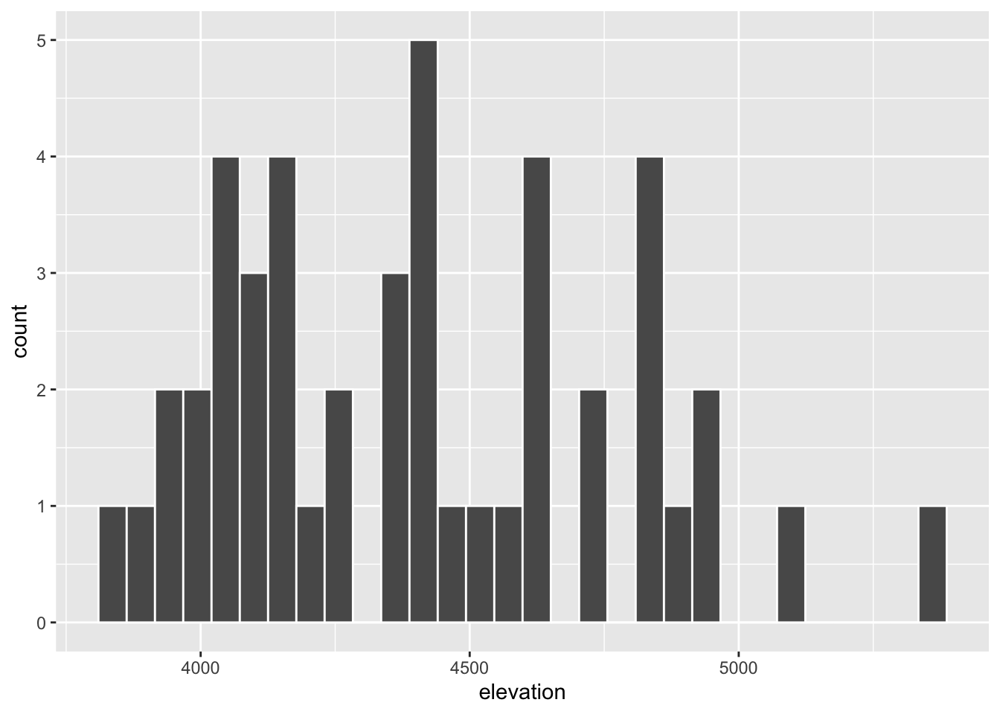

3 Data viz
3.1 Exercise 1
peak elevation difficulty ascent length time rating
1 Mt. Marcy 5344 5 3166 14.8 10.0 moderate
2 Algonquin Peak 5114 5 2936 9.6 9.0 moderate
3 Mt. Haystack 4960 7 3570 17.8 12.0 difficult
4 Mt. Skylight 4926 7 4265 17.9 15.0 difficult
5 Whiteface Mtn. 4867 4 2535 10.4 8.5 easy
6 Dix Mtn. 4857 5 2800 13.2 10.0 moderate3.2 Exercise 2
── Attaching core tidyverse packages ──────────────────────── tidyverse 2.0.0 ──
✔ dplyr 1.1.4 ✔ readr 2.1.5
✔ forcats 1.0.0 ✔ stringr 1.5.0
✔ ggplot2 3.5.1 ✔ tibble 3.2.1
✔ lubridate 1.9.3 ✔ tidyr 1.3.1
✔ purrr 1.0.2
── Conflicts ────────────────────────────────────────── tidyverse_conflicts() ──
✖ dplyr::filter() masks stats::filter()
✖ dplyr::lag() masks stats::lag()
ℹ Use the conflicted package (<http://conflicted.r-lib.org/>) to force all conflicts to become errors3.3 Exercise 3

3.4 Exercise 4

# added 'y = "Number of hikes"', the y-axis has a name
ggplot(hikes, aes(x = rating)) +
geom_bar() +
labs(x = "Rating", y = "Number of hikes")
# added '+geom_bar(fill = "blue")', the bars become blue
ggplot(hikes, aes(x = rating)) +
geom_bar(fill = "blue") +
labs(x = "Rating", y = "Number of hikes")
# added 'color = "orange"', and the bars have orange edges
ggplot(hikes, aes(x = rating)) +
geom_bar(color = "orange", fill = "blue") +
labs(x = "Rating", y = "Number of hikes")
# added '+ theme_minimal()', the color of background changed
ggplot(hikes, aes(x = rating)) +
geom_bar(color = "orange", fill = "blue") +
labs(x = "Rating", y = "Number of hikes") +
theme_minimal()
3.5 Exercise 5
3.5.1 a
3.5.1.1 The purpose of ‘+’ is adding an other function to the original one.
3.5.1.2 Because it is a geometic graph.
3.5.1.3 They give names to the axis.
3.5.1.4 Color gives edges color, fill gives the bar color.
3.5.2 b
3.5.2.1 We can learn that most hikes have rating moderate, and hikes with rating of difficult and easy are similar, there are slightly more easy hikes.
3.5.3 c
3.5.3.1 The label of x axis can be “rate of hikes”, and it should have a sequence of “low, moderate, difficult”.
3.6 Exercise 6
3.7 Exercise 7
3.7.1 a
3.7.1.1 About 6.
3.7.1.2 About 2.
3.7.2 b
3.7.2.1 The center of data is about 4300, and the data spaned from about 3700 to 5500. It is a little bit left-shifted.
3.8 Exercise 8 & 9

`stat_bin()` using `bins = 30`. Pick better value with `binwidth`.
# added 'color = "white"' for histogram, white edges between bars appeared.
ggplot(hikes, aes(x = elevation)) +
geom_histogram(color = "white") `stat_bin()` using `bins = 30`. Pick better value with `binwidth`.
# added 'fill = "blue"' for histogram, the bars became blue.
ggplot(hikes, aes(x = elevation)) +
geom_histogram(color = "white", fill = "blue") `stat_bin()` using `bins = 30`. Pick better value with `binwidth`.
# added code for labels, the labels appeared.
ggplot(hikes, aes(x = elevation)) +
geom_histogram(color = "white") +
labs(x = "Elevation (feet)", y = "Number of hikes")`stat_bin()` using `bins = 30`. Pick better value with `binwidth`.
# added "binwidth = 1000" for histogram, the bars became very wide.
ggplot(hikes, aes(x = elevation)) +
geom_histogram(color = "white", binwidth = 1000) +
labs(x = "Elevation (feet)", y = "Number of hikes")
# added "binwidth = 5" for histogram, the bars became very thin.
ggplot(hikes, aes(x = elevation)) +
geom_histogram(color = "white", binwidth = 5) +
labs(x = "Elevation (feet)", y = "Number of hikes")
# added "binwidth = 200" for histogram, the bars became medimum.
ggplot(hikes, aes(x = elevation)) +
geom_histogram(color = "white", binwidth = 200) +
labs(x = "Elevation (feet)", y = "Number of hikes")